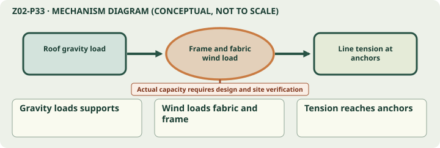

Z02-P33 · Shelter and housing · Adapted historical material
Understand load paths across ridgepoles, tent poles, fabric and guylines
Trace how wind, fabric tension and precipitation forces travel through a shelter frame down to ground anchors.
When it applies · Inspecting manufactured tents, tarps and emergency windbreaks before and during weather exposure.
Equipment · Complete shelter assembly and inspection checklist (no unvalidated field load testing).

Actions
- Identify three separate paths: gravity loads the roof supports, wind acts on fabric and frame, and guyline tension transfers to anchors. The actual path depends on the shelter design.[E16, ED]
- Check joints, anchors and line routing against the shelter instructions. A taut panel cannot establish load capacity.[E20, ED]
- Recognize that improvised deadfall frames and field-cut poles have unknown wood grain, rot and joint friction—never assign them unvalidated snow-load or wind-load capacities.[E13, E05, ED]
Failure recognition · Attaching a heavy tarp mid-panel with a pebble knot or leaning snow-laden branches onto a cracked deadwood ridgepole.[E16, E13, ED]
Verify · Confirm every load-bearing junction—pole ferrule, corner seam, guyline knot and ground stake—shows even tension without kinks, splits or loose play.[E20, E16, ED]
Stop or change course · If supports shift, split or deform or the shelter tears, leave the hazard area. Keep people out until a competent assessment.[E16, ED]
Evidence and editorial notes
- E05 · NWS · What To Do If You're Caught in a Winter Storm (current web edition)
- Section: Outside and find shelter · Conditions: Cold, wet or windy winter conditions
Support: Block wind, stay dry and keep off cold ground. Keep exposure reduction separate from making a fire.
Limitations: Improvised windbreaks do not provide rated thermal protection or snow-load capacity. · Conflicting evidence: None; aligns with CDC-H.
Editorial note: Separates wind, ground, and moisture heat-loss pathways. · Specialist reviewer: Cold-weather shelter specialist
Primary source · checked 2026-11-24 - E13 · USDA Forest Service · Hazard Tree Safety (agency PDF)
- Section: What You Can Do to Reduce Risk · Conditions: Forest campsites and stops
Support: Look for dead trees and falling material. Stay away from hazardous trees and move away when winds make the site unsafe.
Limitations: Internal decay and root rot can cause live-looking trees to fail in saturated soils or high wind. · Conflicting evidence: Does not specify a universal exclusion radius; tree height and slope govern fall reach.
Editorial note: Prevents false precision on fall-zone distance while requiring overhead screening. · Specialist reviewer: Land management and arboriculture safety
Primary source · checked 2026-11-24 - E16 · NWS · Wind Safety (current web edition)
- Section: Wind Safety > High Wind Hazards · Conditions: Forecast or developing high winds, squalls, or straight-line winds
Support: High winds topple trees, loft debris, and stress lightweight shelters beyond fabric and anchor limits; relocate out of timbered fall zones and into substantial shelter before gusts peak.
Limitations: Tents and tarps lack standardized wind-speed survival guarantees across soil types and pitch angles. · Conflicting evidence: None; avoids unvalidated mph ratings for improvised pitches.
Editorial note: Drives high-wind shelter inspection, guying limits, and abandonment thresholds. · Specialist reviewer: Weather safety and shelter equipment
Primary source · checked 2026-11-24 - E20 · NPS · Camping: What to Bring (current web edition)
- Section: Camping: What to Bring > Shelter and Sleep System · Conditions: Overnight camping across three-season and cool conditions
Support: Match tent/tarp, groundsheet, sleeping pad, and sleeping bag ratings to expected night lows and precipitation; test pitching and inspect poles, zippers, and stakes before departure.
Limitations: Manufacturer comfort ratings assume dry insulation, ground pad use, and adequate caloric intake. · Conflicting evidence: None; reinforces pre-trip inspection and dry-sleep separation.
Editorial note: Anchors manufactured shelter selection, groundsheet fit, and gear readiness. · Specialist reviewer: Shelter equipment and field education
Primary source · checked 2026-11-24
Source lineage · B012 P13 and structural mechanics principles; new manuscript · Classification · Adapted historical material.